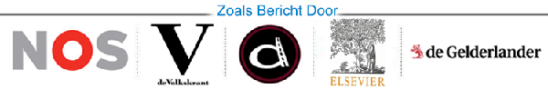
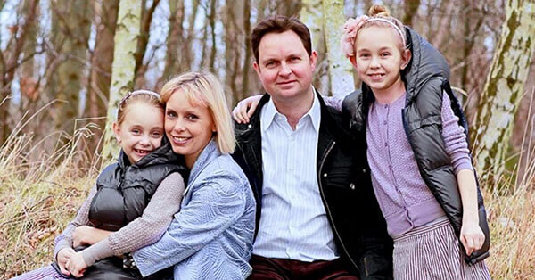
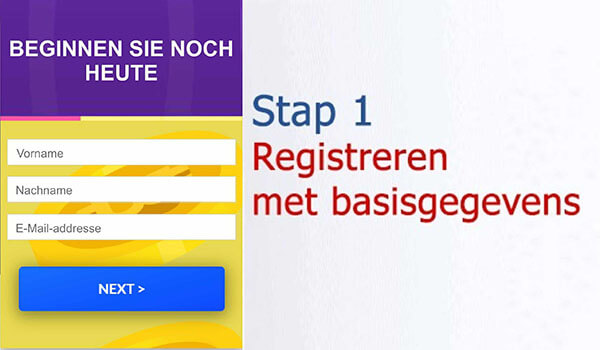
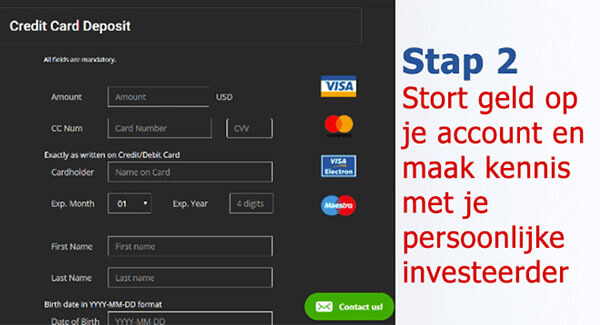
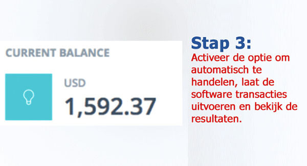

SPECIALE BERICHTGEVING: De meest recente investering van Marco Borsato verbaast experts en maakt grote banken doodsbang
Nederlanders verdienen al miljoenen euro's vanuit huis door gebruik te maken van deze maas in de wet om rijk te worden. Maar is het legaal?
(NOS) - Marco Borsato is bekend geworden als een brutale zanger die geen blad voor de mond neemt en het er geen moeite mee heeft om eerlijk te zijn over de manier waarop hij zijn geld verdient.
Vorige week was hij te gast bij De Wereld Draait Door en hij sprak over een 'maas in de wet om rijk te worden'. Hij zegt dat deze nieuwe mogelijkheid iedereen binnen 3-4 maanden miljonair kan maken. Borsato drukte iedereen in Nederland op het hart snel van deze geweldige kans te profiteren voordat grote banken deze mogelijkheid voorgoed dwarsbomen.
Een aantal minuten nadat het interview was afgelopen, belde Triodos inderdaad op om te voorkomen dat het interview met Marco zou worden uitgezonden. Maar het was al te laat.
Dit is wat er precies is gebeurd:
De Wereld Draait Door-presentator Matthijs van Nieuwkerk nodigde Borsato uit om in de uitzending tips over het opbouwen van vermogen te delen en hij onthulde een groot geheim.
"Ik ben succesvol geworden omdat ik snel en zonder aarzeling nieuwe kansen grijp. En op dit moment verdien ik het meeste geld met een programma voor automatisch handelen in cryptovaluta dat Bitcoin Revolution heet. Het is de grootste kans die ik in mijn hele leven heb gezien om snel een klein fortuin op te bouwen. Ik druk iedereen op het hart om snel gebruik van deze kans te maken voordat banken deze mogelijkheid dwarsbomen."
Matthijs van Nieuwkerk geloofde zijn ogen niet toen Borsato zijn telefoon tevoorschijn haalde en kijkers liet zien hoeveel geld hij verdient met dit nieuwe programma waar iedereen in Nederland inmiddels over praat.
Het item met Borsato was afgelopen voordat hij alles precies kon uitleggen. Daarom hebben we een exclusief interview met de man zelf om meer over deze controversiële kans te weten te komen.
EXCLUSIEF INTERVIEW MET Marco Borsato
"Misschien heb je wel eens van Bitcoin Revolution gehoord. Dit is een nieuw platform om in cryptovaluta te investeren dat gewone mensen in Nederland, Azië en Noord-Amerika helpt om binnen een mum van tijd een fortuin op te bouwen. Mogelijk ben je sceptisch omdat het te mooi klinkt om waar te zijn."
Borsato vertelt verder:
"Dat snap ik omdat ik hetzelfde dacht toen een goede vriend me hierover vertelde. Maar nadat ik met eigen ogen had gezien hoeveel geld hij verdiende, moest ik het zelf proberen.
Ik ben blij dat ik het geprobeerd heb want ik heb nog nooit zo eenvoudig enorm veel geld verdiend. Met het programma dat automatisch handelt, verdien ik tienduizenden euro's per dag. Het is op dit moment letterlijk de snelste manier om enorm veel geld te verdienen. En dit zal niet veel langer mogelijk zijn omdat steeds meer mensen deze kans ontdekken. Het kan ook zo zijn dat banken gaan dwarsbomen dat je van deze mogelijkheid gebruik kunt maken."
WAT IS Bitcoin Revolution PRECIES EN HOE WERKT HET?
Het idee achter Bitcoin Revolution is eenvoudig: gewone mensen de kans bieden om geld te verdienen met de enorme mogelijkheden die cryptovaluta bieden. In tegenstelling tot wat de meeste mensen denken, is dit nog steeds de meest lucratieve investering van de 21e eeuw.
De prijs van bitcoin is na de hoogste prijs ooit van $ 20.000 per bitcoin gedaald, maar handelaren verdienen nog steeds enorm veel geld. Waarom? Omdat er naast bitcoin duizenden andere cryptovaluta zijn die dagelijks met enorme winsten worden verhandeld.
Een aantal van deze cryptovaluta zijn Ripple, Ethereum, Monero en Zcash. Deze cryptovaluta leveren gewone mensen in Nederland nog steeds rendementen van 10.000% of meer op.
Dankzij Bitcoin Revolution kun je zelfs als er sprake van een berenmarkt is met al deze cryptovaluta winst maken. Het systeem maakt gebruik van kunstmatige intelligentie (AI) om automatisch long selling en short selling uit te voeren, zodat je 24 uur per dag en zelfs als je slaapt geld kunt verdienen.
Bitcoin Revolution wordt door een aantal van de slimste technische mensen ooit gebruikt. Dit zijn bijvoorbeeld Richard Branson, Elon Musk en Bill Gates.
Deze technische genieën hebben miljardenbedrijven opgebouwd door oplossingen voor complexe problemen op het gebied van bijvoorbeeld online betalingen, computers en transport te bieden. Nu pakken ze het wereldwijde probleem van welvaartsongelijkheid aan door iedereen - hoe rijk of arm een persoon ook is - de mogelijkheid te bieden om genoeg geld te verdienen om een gelukkig en bevredigend leven te kunnen leiden.
HET LUCRATIEVE GEHEIM OM GELD TE VERDIENEN DAT GROTE BANKEN STIL WILLEN HOUDEN
Marco Borsato vervolgt zijn verhaal:
"De economie bevindt zich in een lastige periode en dit is de oplossing waar mensen op gewacht hebben. Nog nooit is er zo'n geweldige kans geweest die gewone mensen eenvoudig kunnen aangrijpen om in zeer korte tijd enorm rijk te worden.
Sommige mensen aarzelen om dit te proberen omdat het systeem zo anders is. En dat komt omdat de grote banken dit stil proberen te houden! De grote banken zijn actief bezig met het creëren van propaganda en noemen cryptovaluta en platforms zoals Bitcoin Revolution oplichterij. Waarom? Ze zijn bang dat de bedrijfswinsten zullen afnemen als klanten weten hoe ze zelf enorm rijk kunnen worden.
Er bestaat geen twijfel dat cryptovaluta de grootste revolutie van deze tijd is en mensen doen zichzelf tekort als ze geen gebruik van deze mogelijkheid maken. Ik heb al boze telefoontjes en bedreigingen van grote financiële bedrijven gekregen omdat ik deze technologie bij mensen onder de aandacht breng. Maar daar heb ik lak aan. Mensen in Nederland beginnen nu de waarheid te ontdekken en het is slechts een kwestie van tijd voordat dit voor meer mensen geldt.
Ik deel dit omdat ik ook honderden e-mails heb ontvangen van mensen die me voor het delen van dit geheim hebben bedankt. Mijn favoriete e-mail is van een jongeman die van het geld dat hij met Bitcoin Revolution heeft verdiend de droomauto, een Ferrari 488 Pista, voor zijn jongere broer heeft gekocht. Dit platform maakt het leven van iedereen ter wereld echt een beetje beter."
WERKT Bitcoin Revolution ECHT? WE TESTEN HET ZELF
Onze hoofdredactie wilde het interview met Marco Borsato niet publiceren voordat we hadden geverifieerd dat Bitcoin Revolution echt de mogelijkheid biedt om vanuit huis geld te verdienen. Het topmanagement wilde niet dat we informatie zouden delen die ertoe zou kunnen leiden dat Nederlanders hun zuurverdiende geld verliezen.
Daarom heeft ons redactieteam Bitcoin Revolution getest om er zeker van te zijn dat het echt werkt zoals Borsato beschrijft. Noah Jansen is een van onze online redacteuren en hij heeft vrijwillig aangeboden om Bitcoin Revolution met zijn eigen geld uit te proberen.
Noah is een 53-jarige vader van twee zoons en vanwege een ziekte is zijn vrouw vorig jaar haar baan verloren. Hij gaf eerlijk toe dat hij het financieel lastig had en deze investeringsmogelijkheid zou de oplossing kunnen zijn.
Noah vertelt:
"Toen ik van het interview met Borsato hoorde, dacht ik eerst dat hij een grapje maakte. Geld verdienen vanuit huis is slechts een droom. Vanwege mijn financiële omstandigheden en om goed journalistiek werk te doen, besloot ik om het toch te proberen.
Ik heb een introductievideo over het platform bekeken en vervolgens heb ik me aangemeld. De video leek me overdreven veelbelovend, maar ik besloot om mijn scepsis opzij te zetten. Binnen een paar uur kreeg ik een telefoontje van mijn persoonlijke investeerder. Hij beantwoordde alle vragen en nam alle twijfels die ik had weg. Verder verzekerde hij me dat ik simpelweg geld zou gaan verdienen.
Mijn persoonlijke investeerder beloofde zelfs dat hij onmiddellijk mijn eerste storting van € 250 zou terugbetalen als ik ook maar één euro zou verliezen. Zo zeker was hij dat dit mijn leven zou veranderen. Deze klantenservice gaat verder dan ooit en het is dan ook geen wonder dat banken bang zijn.
Nadat ik toegang tot het platform had gekregen, heb ik de eerste storting van € 250 uitgevoerd. Dit is ongeveer hetzelfde bedrag wat mijn gezin iedere maand aan junkfood uitgeeft en daarom besloot ik om een maand geen fastfood te kopen. Op deze manier kunnen we gezonder eten en we hebben de mogelijkheid om rijk te worden.
Het systeem van Bitcoin Revolution is een platform om automatisch in cryptovaluta te handelen. De software maakt gebruik van geavanceerde algoritmen op basis van kunstmatige intelligentie en machinaal leren om precies te voorspellen wanneer de prijs van cryptovaluta stijgt en daalt. Vervolgens worden de cryptovaluta 24 uur per dag automatisch voor je gekocht en verkocht. Technologie heeft ons leven al op alle mogelijke manieren gemakkelijker gemaakt. Dus waarom zou je het niet gebruiken om meer geld te verdienen?"
Noah's RESULTATEN MET HET SYSTEEM IN REAL-TIME
"Binnen één uur na het storten van het bedrag van € 250 begon de software voor mij te handelen. Om eerlijk te zijn was ik bang dat ik al mijn geld zou verliezen. En mijn eerste transactie leverde inderdaad een verlies van € 25 op!
Het voelde alsof mijn keel werd dichtgeknepen. Ik dacht dat ik was opgelicht. Ik stond zelfs op het punt om mijn persoonlijke investeerder te bellen en mijn geld terug te vragen. Maar toen herinnerde ik me wat hij me tijdens ons eerdere gesprek had verteld: het algoritme heeft het ongeveer in 80-89% van de gevallen bij het rechte eind. Niet ALLE transacties zullen winst opleveren, maar uiteindelijk zullen genoeg transacties winst opleveren om geld te verdienen.
Daarom zorgde ik ervoor dat de software transacties voor me bleef uitvoeren en ik hield de transacties nauwlettend in de gaten. De volgende transactie leverde winst op! Het was een winst van slechts € 19, maar het was in ieder geval iets. De transactie die daarna werd uitgevoerd, leverde een winst van € 51 op. Daarna leverde een transactie € 22 winst op waardoor ik in totaal een winst van € 67 had gemaakt. En dat allemaal in minder dan 5 minuten!
Het duurde niet lang voordat ik enorm veel geld begon te verdienen en ik kon mijn ogen niet geloven.

Nu begrijp ik waarom Marco Borsato altijd een goed humeur heeft. En ik snap nu ook waarom grote banken willen voorkomen dat mensen deze maas in de wet om rijk te worden ontdekken. Aan het eind van de dag had ik meer dan € 754 winst gemaakt. Niet slecht voor een investering van € 250! Ik was zo opgewonden dat ik bijna niet kon slapen.
De volgende dag was het dinsdag en moest ik weer aan het werk. Om eerlijk te zijn (en vertel dit niet aan mijn baas), was het moeilijk om me op mijn werk te concentreren omdat ik wist dat de Bitcoin Revolution software geld voor me aan het verdienen was.
Ik ging een paar keer naar de wc om te kijken hoeveel winst ik maakte en ik bleef maar geld verdienen (met af en toe een transactie die een klein verlies opleverde). Voordat ik mijn kinderen aan het einde van de dag naar bed bracht, zag ik dat het saldo van mijn account € 1349,13 was. Dat is meer dan ik in een WEEK met mijn normale mijn werk verdien!
Aan het einde van de week had ik in totaal € 5349,12 verdiend. Ik liet precies € 4500 uitbetalen en de rest van het geld gebruikte ik om opnieuw te investeren. Binnen twee dagen ontving ik via de post mijn eerste cheque met een waarde van precies € 4500. Ik kon niet geloven dat het echt waar was!""

Noah vertelt verder:
""Nu verdien ik dankzij Bitcoin Revolution voortdurend € 700 tot € 1500 per dag extra. Nu wordt het geld gewoon om de paar dagen op mijn bankrekening gestort. Je kunt het geld met slechts een paar klikken laten uitbetalen en binnen 24-48 uur staat het geld op mijn bankrekening. Elke keer als het geld naar mijn bankrekening is overgemaakt, moet ik mezelf in m'n arm knijpen om er zeker van te zijn dat ik niet droom.
Gelukkig vind ik mijn werk GEWELDIG omdat ik mensen belangrijke nieuwsberichten (zoals deze) kan bieden. Als dat niet het geval was, had ik mijn baan inmiddels al opgezegd. Maar ik heb wel een vakantie met mijn gezin naar het Indonesische eiland Bali geboekt om te vieren dat we geen schulden meer hebben en eindelijk onze financiën weer op orde hebben!
Dit is alleen mogelijk dankzij de gulheid van meneer Borsato en het feit dat hij zijn geheim live op televisie heeft gedeeld. En ik ben blij dat ik het risico heb genomen om Bitcoin Revolution zelf uit te proberen. Mijn vrouw is gelukkiger dan ooit en we hebben veel speelgoed voor onze kinderen kunnen kopen.
Mijn collega's balen enorm omdat ze zichzelf niet net zoals ik twee weken geleden hebben aangemeld. Maar het duurde niet lang totdat al mijn collega's (inclusief mijn baas) zich hadden aangemeld en ze noemen mij een "held" omdat ik dit heb geprobeerd."
HOE JE MET Bitcoin Revolution AAN DE SLAG KUNT GAAN (BEPERKT AANTAL PLEKKEN BESCHIKBAAR)
Om aan de slag te gaan heb je alleen een computer, smartphone of tablet met internettoegang nodig. Je hebt geen specifieke vaardigheden nodig en je hoeft alleen te weten hoe je een computer moet gebruiken en op internet moet surfen. Je hebt geen ervaring op het gebied van technologie of cryptovaluta nodig, want de software en je persoonlijke investeerder zorgen ervoor dat je gegarandeerd winst maakt.
Een ander voordeel van dit programma is dat je kunt beginnen wanneer je maar wilt. Je kunt je eigen uren bepalen en het maakt niet uit of dat vijf of 50 uur per week is. Je kunt de software om automatisch te handelen op elk moment activeren en je kunt pauzeren wanneer je maar wilt (maar ik kan geen reden bedenken waarom je dat zou doen).
Om onze lezers tijd te besparen en te controleren hoe het systeem werkt, heeft Noah een handleiding gemaakt om met het systeem aan de slag te gaan.
DIT IS DE STAP-VOOR-STAPHANDLEIDING:
Je krijgt eerst een video te zien die de kracht van Bitcoin Revolution aantoont. De advertentie is groot en enorm opvallend, maar dat is nu eenmaal de manier waarop Amerikaanse bedrijven de aandacht trekken. Maar je hoeft naast de video alleen maar je naam en e-mailadres in te vullen om meteen aan de slag te gaan.
(Tip: zelfs als je besluit om geen geld te investeren, raad ik je aan om je nu aan te melden. Dit is namelijk gratis en het kan voor Nederlanders op ieder moment onmogelijk worden om zich te registreren).
Vervolgens wordt gevraagd om geld op je account te storten. Toen ik op de pagina was om het geld te storten, ging mijn mobiele telefoon over. Ik twijfelde of ik moest opnemen omdat het een internationaal nummer was, maar toen besefte ik dat het een telefoontje van Bitcoin Revolution moest zijn.
Ja hoor, het was mijn eigen persoonlijke accountmanager. Zijn service was geweldig. Hij heeft me geholpen tijdens het hele proces om geld op mijn account te storten. Het bedrijf accepteert alle veelgebruikte creditcards zoals Visa, MasterCard en American Express. Ik heb vervolgens het minimumbedrag van €250 op mijn account gestort.
Toen ik het geld op mijn account had gestort, ben ik naar het gedeelte "automatisch handelen" van de software gegaan en het bedrag om mee te handelen op de aanbevolen € 50 ingesteld. De software begon in hoog tempo transacties uit te voeren en in het begin was ik nogal zenuwachtig, maar ik besloot om het systeem zijn werk te laten doen.
"Iedereen wil rijk worden, maar niemand weet hoe je dit kunt bereiken. Nou, dit is de kans van je leven om een fortuin te verdienen en het leven te leiden waar je altijd van hebt gedroomd. Deze kans zal NIET voor altijd beschikbaar blijven, dus zorg ervoor dat je deze kans niet misloopt." - Marco Borsato
bijwerken
We hebben zojuist het bericht gekregen dat er vanaf vandaag () bijna geen plekken meer voor Nederlanders beschikbaar zijn. Bitcoin Revolution kan in totaal slechts een beperkt aantal gebruikers accepteren om ervoor te zorgen dat elke gebruiker veel winst kan maken. Op dit moment zijn er nog (37) plaatsen beschikbaar, dus wees snel en meld je nu aan om je plek te bemachtigen.
RESULTATEN VAN LEZERS
WINST: € 5552

"Ik gebruik Bitcoin Revolution nu al iets meer dan twee weken en het bedrag voor de eerste storting van € 250 is inmiddels naar een bedrag van € 5.802 gestegen. Dat is veel meer dan ik met mijn werk verdien."
Bram De Vries
Gouda, South Holland
WINST: € 9200

"Ik heb meer dan € 9200 winst gemaakt en ik heb Bitcoin Revolution nog maar een maand gebruikt. Omdat ik het programma op mijn laptop kan gebruiken, ben ik door Nederland gereisd terwijl ik de hele tijd geld heb verdiend!"
Luuk Visser
Amsterdam, Holland
WINST: € 22219
"Zelfs voor mij is het ongelofelijk eenvoudig te gebruiken! Ik heb nog nooit gehandeld, maar ik verdien meer dan € 3000 per week en ik geniet van het leven!"
Emma Janssen
Utrecht, Netherlands
WINST: € 41943

"Ik heb het volledig aan Bitcoin Revolution te danken dat ik eindelijk mijn baan heb kunnen opzeggen. Ik heb op een enorm eenvoudige manier ongelofelijk veel geld verdiend!"
Finn Helman
Leiden, South Holland
WINST: € 7521

"Ik gebruik Bitcoin Revolution nog maar twee weken en ik heb met het systeem al zo veel winst gemaakt dat ik het geld heb gebruikt om een Europese vakantie te boeken."
Zoë Barger
Haarlem, Netherlands
WINST: € 58744

"Ik ben samen met mijn beste vrienden gaan handelen en na drie weken hebben we werkelijk enorm veel winst gemaakt. De robot om te handelen doet al het werk voor je. Samen hebben we meer dan € 17.000 per week verdiend."
Levi Dillen & Jesse Becker
Rotterdam, South Holland
WINST: € 12301

"Mijn vriend heeft me dit verteld en het heeft mijn leven veranderd. Ik verdien al meer dan een maand meer dan € 2000 per week en ik hoef minder dan 30 minuten per dag aan het handelen te besteden."
Julia Van den Berg
Breda, North Brabant